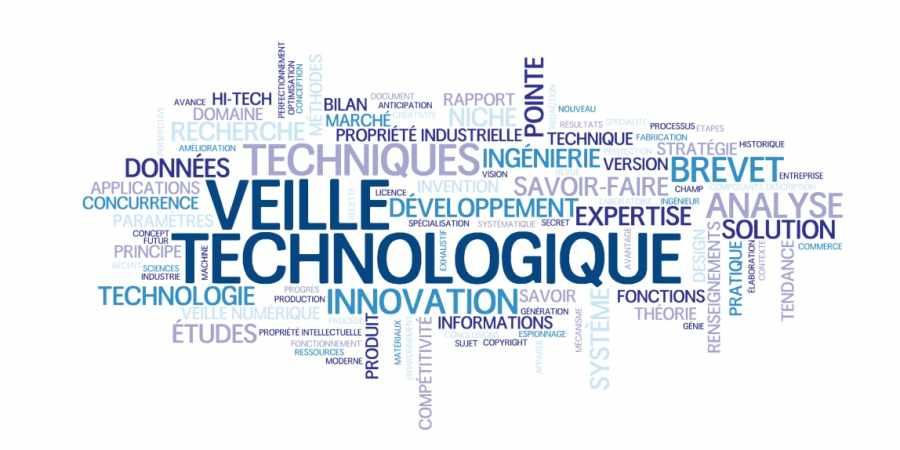

Veille technologique
21 Mai 2018
Qu'est-ce que la veille technologique ?
Dans les métiers du service, notamment en informatique, la veille est un outil indispensable de mise à niveau et de connaissances. Elle permet de rester compétitif dans un secteur en constante évolution.
Lire l'article